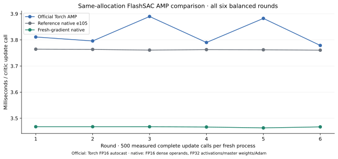
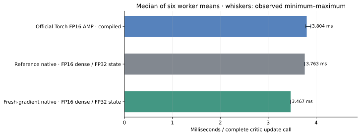

FlashSAC: measuring native CUDA update speed
Abstract
D · first allocation. Fresh gradients used 7.87% less update time than the native reference at the median paired ratio, with 6/6 paired wins. The predeclared target was met. Fresh gradients used 8.83% less update time than official Torch AMP at the median paired ratio, with 6/6 paired wins. The predeclared target was met.
D · repeat allocation · separate allocation. Fresh gradients used 7.90% less update time than the native reference at the median paired ratio, with 6/6 paired wins. The predeclared target was met. Fresh gradients used 9.76% less update time than official Torch AMP at the median paired ratio, with 6/6 paired wins. The predeclared target was met.
All six rounds per allocation remain visible, including target misses. These are execution measurements with synthetic inputs; no policy learning or walking quality is measured.
What we measured
We are building a native CUDA FlashSAC learner to reduce the time spent updating a policy. The comparison keeps the authors’ networks and losses, while changing how their computations execute. We time complete learner updates on synthetic G1-shaped inputs against pristine official Torch AMP. Physics, rollout collection, sample efficiency and policy quality are not measured.
This page details D · first allocation: avoiding selected redundant gradient clears. A and B first checked repeatability on two fresh allocations; C then measured fused conversions. The table places those audited steps alongside D, whose detailed figures and controls follow below.
Companion studies: Balanced two-allocation repeatability report · Conversion-fusion comparison · D · repeat allocation. D’s three recipes are measured anew on its allocation; the companion results use their own allocations and sources.
| Study / allocation | Paired comparison · source pins | Median time ratio | Paired wins | Target |
|---|---|---|---|---|
| A · allocation 1 | Tuned native 33870ab / official 87edc90 | 0.9816 | 6/8 | Not met |
| B · allocation 2 | Tuned native 33870ab / official 87edc90 | 0.9867 | 7/8 | Not met |
| C · allocation 3 | Conversion e105370 / reference 33870ab | 0.9932 | 5/6 | Not met |
| C · allocation 3 | Conversion e105370 / official 87edc90 | 0.9760 | 4/6 | Not met |
| D · first allocation | Fresh 7eb6369 / reference e105370 | 0.9213 | 6/6 | Met |
| D · first allocation | Fresh 7eb6369 / official 87edc90 | 0.9117 | 6/6 | Met |
| D · repeat allocation | Fresh 7eb6369 / reference e105370 | 0.9210 | 6/6 | Met |
| D · repeat allocation | Fresh 7eb6369 / official 87edc90 | 0.9024 | 6/6 | Met |
A ratio below 1 means less update time for the numerator. Each row pairs recipes within its own allocation; allocations and source versions are separate and are not pooled. A/B required ≥7/8 wins and median ratio ≤0.97. C required 6/6 wins and ratios ≤0.985 versus its native reference or ≤0.97 versus official. D requires 6/6 wins and ≤0.97 for each comparison. These are predeclared engineering targets, not statistical significance tests.
The independent D repeat uses the identical frozen source, protocol, initial arrays and fixture on a separate workflow allocation. Its outcomes are shown separately and its own figures are on the companion page. No rounds are pooled, and no new aggregate statistic or significance claim is added.
1 · Controlled source comparison
The native reference and candidate differ in 8 frozen files implementing one opt-in fresh-gradient bundle, its diagnostics and a shared benchmark driver. On selected privately owned residual intermediates, the first backward writer assigns its complete gradient instead of adding to an already cleared array. Those arrays can then be omitted from the grouped gradient clear. The learner proves full tape inventory, ownership and nonoverlap before selecting assignment and reduced clearing together; ordinary calls retain accumulation. Networks, losses, parameters and optimizer state are preserved. This study measures the complete bundle under one setup; it does not isolate assignment from reduced clearing or eliminate clock/order noise.
The official row is pristine FlashSAC using compiled Torch FP16 AMP with the authors’ TF32/high policy. Native uses FP16 dense operands with FP32 accumulation, activations, master weights and Adam; Torch autocast rounds more intermediates. The native-versus-official comparison therefore includes execution and precision-path differences. Autotuning is disabled in both native variants. The timing fixture has no terminals or timeouts, so it does not compare those environment semantics.
All six permutations of the three recipes were shuffled with seed 53 before execution. Every recipe occupies each position twice; every directed immediate predecessor occurs twice within rounds. Cross-round boundary transitions are not separately balanced. Each worker is a fresh process/learner with empty Adam/scaler/counter state, the same 89 canonical state arrays and bit-identical transition fixture.
| Engineering target | Paired wins | Median time ratio | Maximum median ratio | Outcome |
|---|---|---|---|---|
| Primary · fresh / reference native | 6/6 | 0.9213 | 0.97 | Met |
| Secondary · fresh / official Torch AMP | 6/6 | 0.9117 | 0.97 | Met |
Both thresholds were frozen before execution: 6/6 paired wins, with median fresh/reference time ≤0.97 for the primary comparison and fresh/official time ≤0.97 for the secondary comparison. A target miss remains a valid measured outcome. Six rounds on one allocation are descriptive timing repetitions, not independent training seeds, allocations, confidence intervals or a universal-speed result.
2 · All measured rounds



| Recipe / precision | Median (ms/call) | Round range (ms) | Completed C / A / T | Skipped C / A / T |
|---|---|---|---|---|
| Official Torch FP16 AMP · compiled | 3.804 | 3.779–3.890 | 3,000 / 1,500 / 1,500 | 0 / 0 / 0 |
| Reference native · FP16 dense / FP32 state | 3.763 | 3.761–3.765 | 3,000 / 1,500 / 1,500 | 0 / 0 / 0 |
| Fresh-gradient native · FP16 dense / FP32 state | 3.467 | 3.463–3.468 | 3,000 / 1,500 / 1,500 | 0 / 0 / 0 |
Complete update timing includes replay sampling, reward scaling, optimizer work, projections, target EMA and default per-call CPU scalar metrics (7 on actor phases, 2 on critic-only phases). Physics and rollout collection are absent. Public action API timing, which copies actions to a CPU NumPy array, is recorded separately and excluded from these update figures.
3 · Startup, warmup and clock context
The candidate’s 19-stage focused diagnostic runs first. One preconditioning process per recipe then runs in official/reference/candidate order, followed by 18 balanced measurement processes. Compiler caches persist across workers, so these are ordered shared-cache costs, not independent cold starts. All processes preserve fresh optimizer/scaler state before equal warmup.
Excluded preconditioning · all three outcomes retained
| Recipe | Setup excluding warmup (s) | Warmup (s) | Whole worker wall (s) |
|---|---|---|---|
| Official Torch AMP | 35.189 | 423.231 | 474.466 |
| Reference native e105 | 6.574 | 0.427 | 40.823 |
| Fresh-gradient native | 1.292 | 0.395 | 32.810 |
Measurement processes · medians over six rounds
| Recipe | Setup excluding warmup (s) | Warmup (s) | Whole worker wall (s) |
|---|---|---|---|
| Official Torch AMP | 16.351 | 7.009 | 38.263 |
| Reference native e105 | 1.329 | 0.426 | 33.010 |
| Fresh-gradient native | 1.326 | 0.396 | 33.147 |
The complete controller protocol took 20.60 minutes, including the candidate diagnostic (0.68 minutes), preconditioning, all fresh workers and controller audits/checkpoint IO; dependency/OS setup is excluded. Each worker performs 100 warmup action/update calls, 100 separately timed action calls and 500 measured updates. Per recipe, six measured workers complete 3,000/1,500/1,500 timed C/A/T updates; including warmups and its preconditioning worker, the recipe completes 4,200/2,100/2,100 updates. No AMP attempt was skipped.
| Recipe | Sampled SM clock (MHz) | Temperature (°C) | Power draw (W) | Samples |
|---|---|---|---|---|
| Official Torch AMP | 2490–2490 | 33–40 | 158–207 | 12 |
| Reference native e105 | 2490–2490 | 35–42 | 164–294 | 12 |
| Fresh-gradient native | 2475–2490 | 33–41 | 163–300 | 12 |
Read-only device samples lie outside update timers. They provide clock/thermal context rather than continuous monitoring or a causal decomposition of small timing changes. Clock locking was not imposed. Missing samples remain unavailable in the derived data.
4 · Numerical and artifact controls
The focused diagnostic passed all 19 stages, including assignment versus full-clear reference, ordinary/repeated backward accumulation, overflow recovery, changed-owner fallback, invalid storage rejection, the existing conversion/scaler controls, and small/G1-shaped eager and captured learners. Eight learner stages preserve 16 native checkpoints and separately validate in-place reload plus captured continuation. Individual timing workers save checkpoints; they do not each perform a reload roundtrip. The independent CPU audit reopens all their payloads, checks finite updated parameters and optimizer state, and verifies exact 600/300/300 total C/A/T counters and zero skips after warmup plus measurement. Every original artifact is checked against the complete SHA inventory.
An earlier preparation attempt stopped before timing because three diagnostic expressions accessed a Parameter wrapper rather than its gradient array. The retry changes only that diagnostic file from source 96601753e502; all 38 library files and the common timed worker are byte-identical. The earlier failed preparation is preserved separately and excluded from this successful-allocation timing protocol.
All 7 candidate workers, including preconditioning, record 3 untimed activation snapshots: after preparation, measured updates and checkpoint saving. Actor and critic must remain enabled with no fallback, positive owned/remaining byte counts and matching native clear-plan accounting. Baseline workers record mode False without calling the new method. The table describes verified buffer sizes, not measured memory bandwidth or an isolated causal timing saving.
| Phase | Assigned raw arrays | Omitted clear size (MiB) | Remaining clear size (MiB) |
|---|---|---|---|
| Actor | 12 | 60.00 | 98.74 |
| Critic | 8 | 80.00 | 137.59 |
Fixture: 123 observations, 37 actions, 1,024 vector inputs, replay batch 2,048; actor width 128, critic width 256, two residual blocks, 101 categorical bins. Runtime: NVIDIA L40, Python 3.12.14, Torch 2.11.0+cu130, Warp 1.17.0, Warp-NN 0.4.1. The unchanged official standalone learner runs outside its declared Python <3.12 support matrix. Prepared native graph buffers and plans remain tied to their original device and storage. Arbitrary private pointer replacement after external graph capture is unsupported; checkpoint restoration copies state in place.
Frozen sources: reference e105370268a5, fresh-gradient candidate 7eb6369d9719, and pristine official 87edc9061150. FlashSAC architecture, losses and algorithm credit belong to the FlashSAC paper and authors; see RoboLearn attribution and licenses. This supplement measures execution only.
Sanitized derived data and evidence hashes · Report checksums. Original JSON/checkpoints remain preserved separately. Public data excludes local paths, internal hosts and GPU UUIDs.